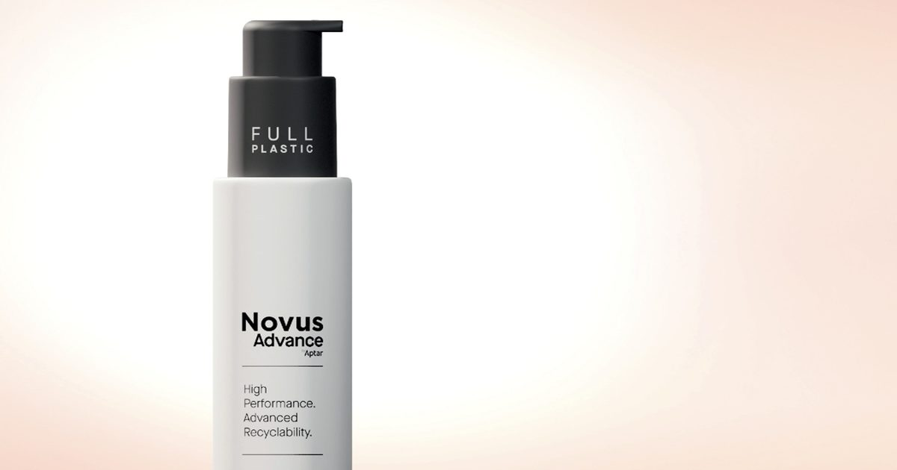

Aptar Beauty расширяет ассортимент полностью пластиковых косметических насосов
Специалист по дозированию растворов для ароматов и красоты запускает Novus Advance, полностью пластиковый насос, предназначенный для ухода за волосами и телом.
Новое решение расширяет платформу Advance группы полностью полиолефиновых насосов, разработанных для повышения возможности переработки.
Aptar Beauty расширяет свою Advance Collection, новое поколение цельнопластиковых насосов, предназначенных для максимальной утилизации.
Оптимизированная возможность вторичной переработки Впервые представлена в 2025 году, Adva